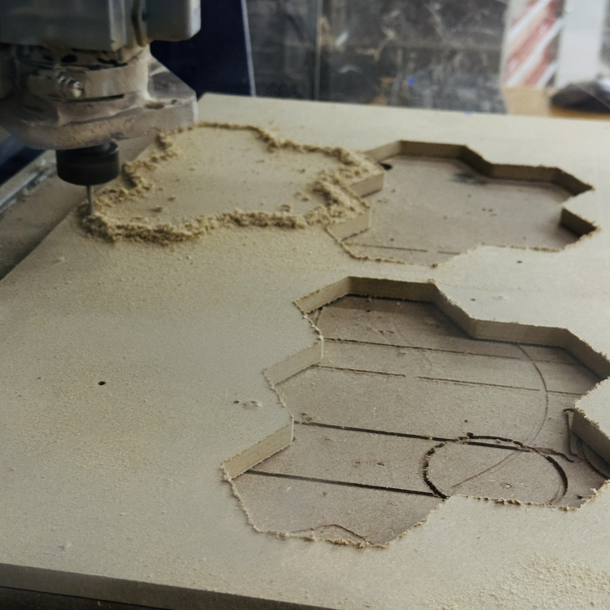
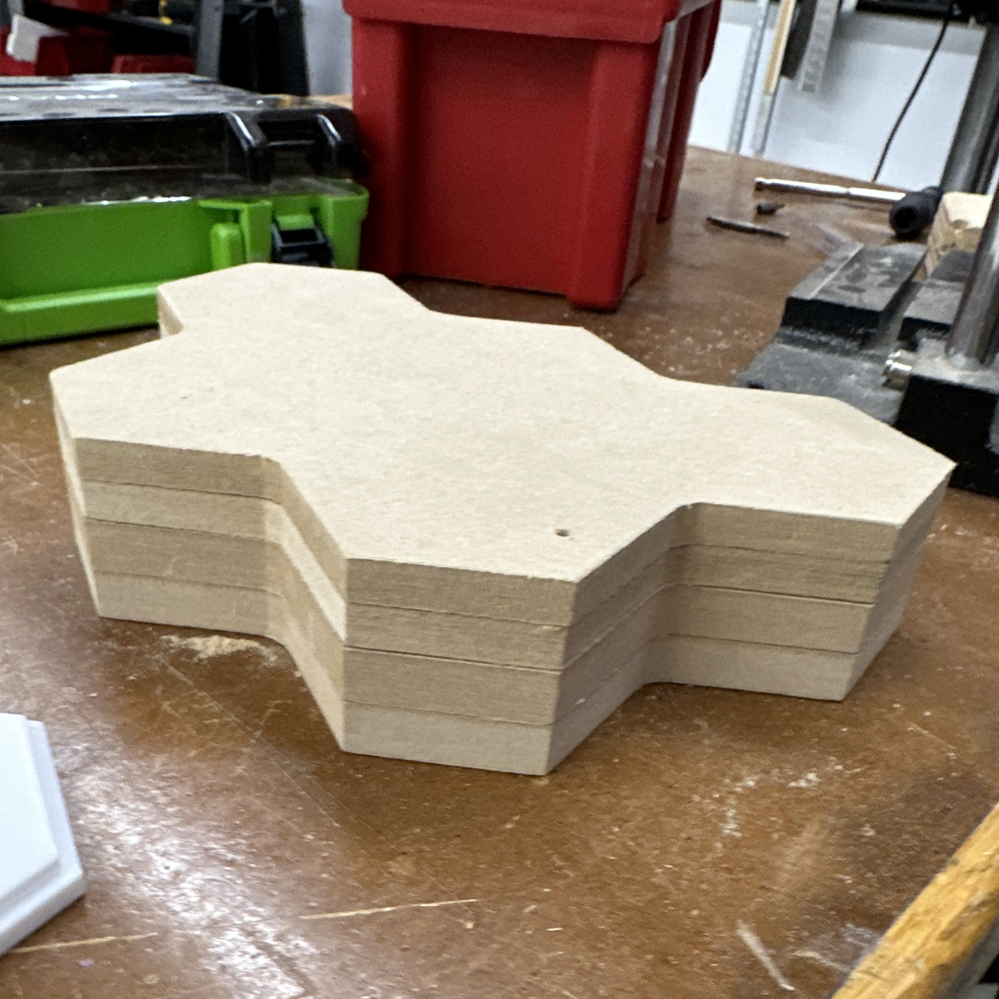
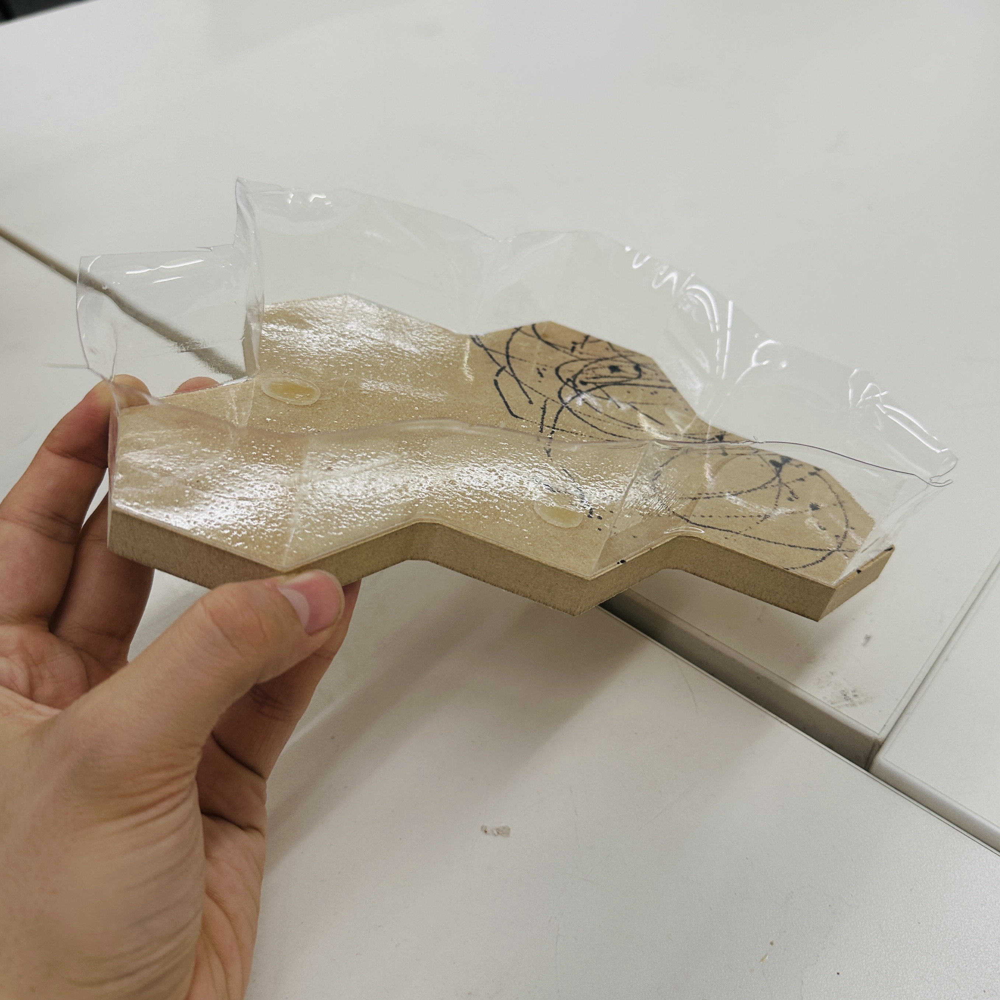

<div class="textcontainer">
<p class="margin"> </p>
<h3>Week 8: CNC Milling</h3>
<p class = "margin"></p>
<p class = "margin"></p>
<h4>Assignment: Make Something With CNC</h4>
<p class = "margin"></p>
<p> For this week, I decided to use the CNC and vacuum former to create a waterproof lining that would act as the body for my final project. The idea behind
this was to CNC out multiple copies of my body, stack them, and then vacuum form the shape. This seemed like the best solution as the body for my project is shaped
relatively abstractly.
</p>
<p class = "margin"></p>
<p></p>
<p class = "margin"></p>
<video width="640" height="640" controls>
<source src="cncvid.mp4" type="video/mp4">
</video>
<p class = "margin"></p>
<p> This process was actually relatively smooth, with the most time consuming part (besides initial confusions regarding the CNC) being the fact that no piece of
scrap wood had enough leftover material for me to get more than 2 copies of my cutouts from. After a few cycles of scraping up my used pieces of mdf and nailing down
new ones, I was left with a decent sized stack of (mostly) uniform shapes!
</p>
<p class = "margin"></p>
<p></p>
<p>Next up was the vacuum former which I immediately feared as not being big enough. This was because my stack was approximately 3 inches high, but when placed
onto the small vacuum former, there was only about a half inch of margin on either side of the piece. Upon vacuum forming, my fears were proven true, and the
plastic bowed towards the ends due to a lack of material. I will have to do a second iteration of this using the larger vacuum former.
</p>
<p></p>
</div>